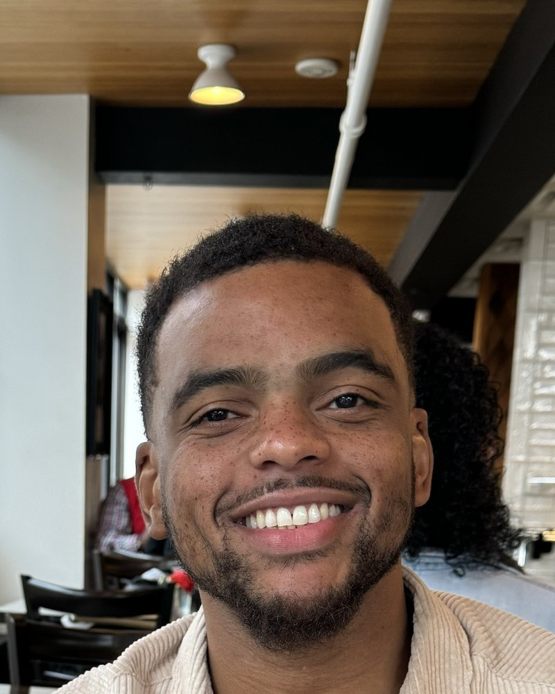

D
Define
Establishes the beliefs, vision, mission, professional standards, and student developmental areas that guide our work.
The Houston High School Comprehensive School Counseling Program supports every student’s academic, career, and social/emotional development while preparing them for meaningful life after graduation.

I am Ashton Morgan, an educator with six years of experience and a passion for helping high school students prepare for what comes next.
My professional interests include college and career readiness, postsecondary transition planning, academic and career advisement, student goal-setting and self-efficacy, and student advocacy. I am especially interested in helping students successfully launch after graduation.
Whether a student plans to attend a university, community college, technical program, enter the workforce, pursue military service, or explore another meaningful pathway, every student deserves support in understanding their strengths, opportunities, and next steps.
Our comprehensive school counseling program is organized around four connected components: Define, Manage, Deliver, and Assess. Together, they help us create a student-centered, intentional, and data-informed program.
Establishes the beliefs, vision, mission, professional standards, and student developmental areas that guide our work.
Explains how we organize time, goals, data, collaboration, and planning so school counseling services remain focused on student needs.
Describes how students receive direct and indirect school counseling services, including instruction, advisement, counseling, collaboration, and referrals.
Uses data, student outcomes, program results, and professional reflection to determine what is working and what should improve.
Students build the habits, plans, and decision-making skills needed to make progress toward graduation and future education.
Students connect interests, abilities, and goals to college, technical training, careers, military service, or other meaningful pathways.
Students strengthen confidence, coping, relationships, self-advocacy, and other skills that support success in school and beyond.